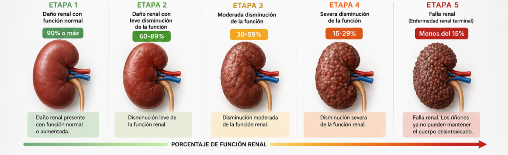
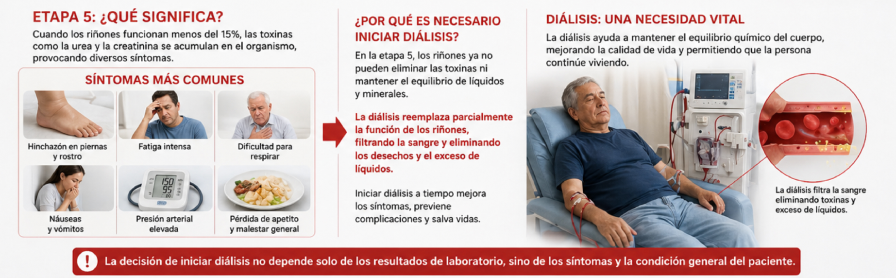
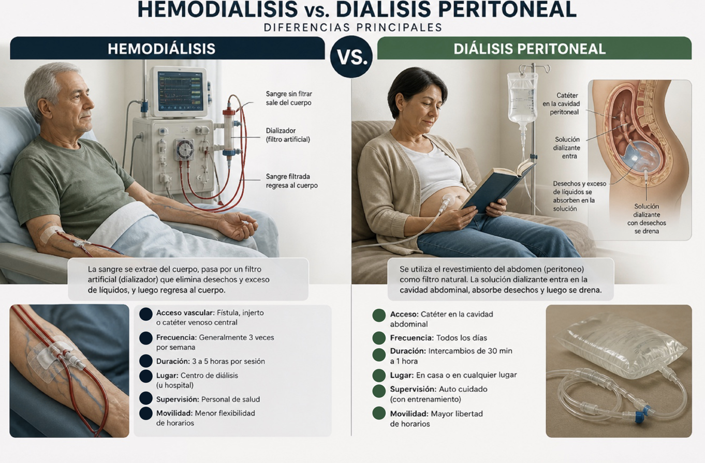
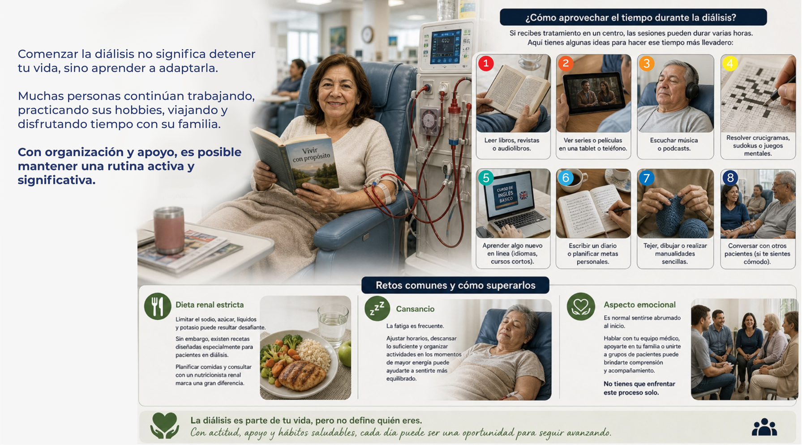

Diálisis al descubierto Insuficiencia renal y diálisis Riñón artificial o hemodiálisis Acceso vascular Catéter Peso seco Viviendo ERC Etapas de la enfermedad renal crónica Hemodiálisis vs diálisis peritoneal Consejos para aprovechar el tiempo durante la diálisis